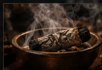

AMOR · PROTECCIÓN · CAMINOS · LECTURA
Consulta espiritual
con Santa Muerte.
Atención privada para asuntos de amor, protección y caminos, con consultas de tarot y lectura del tabaco.
¿QUÉ QUIERES RESOLVER?
Empieza por tu situación.
Elige el tema que mejor describe lo que estás viviendo.

NUESTRA ESPECIALIDAD
Trabajos con
Santa Muerte.
Es la especialidad central de la casa. Cada caso se escucha primero y, a partir de la consulta, se define qué tipo de orientación o trabajo corresponde.
Consultar mi caso →CONSULTA ESPECIAL
Lectura
del tabaco.
Una lectura simbólica para conversar sobre bloqueos, vínculos, decisiones y caminos antes de elegir otro trabajo espiritual.
TAROT Y ORIENTACIÓN
Antes de actuar,
pregunta.
El tarot puede formar parte de la consulta inicial para explorar una situación desde el simbolismo de esta práctica.
Consultar tarot →CÓMO FUNCIONA
Tres pasos. Nada más.
Escribe
Cuéntanos brevemente qué quieres consultar.
Recibe orientación
Te explicamos la forma de atención según tu consulta.
Define tu camino
Si deseas continuar, coordinas directamente los siguientes pasos.
CONSULTA PRIVADA
Tu consulta empieza aquí.
Cuéntanos tu caso y recibe atención directa por WhatsApp.
+57 321 243 5033 · +57 314 414 4151 · Líneas de Colombia · Atención para México